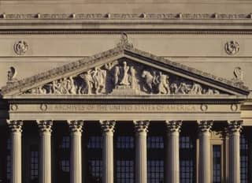

landmark:washingtondc#national-archives-museum“National Archives Building, Washington, D.C.” — Highsmith, Carol M., 1946-, photographer · 1980-01-01 · Library of Congress
Public domain · loc 2011630755 · high · modern · still looks: yes
title "National Archives Building, Washington, D.C."